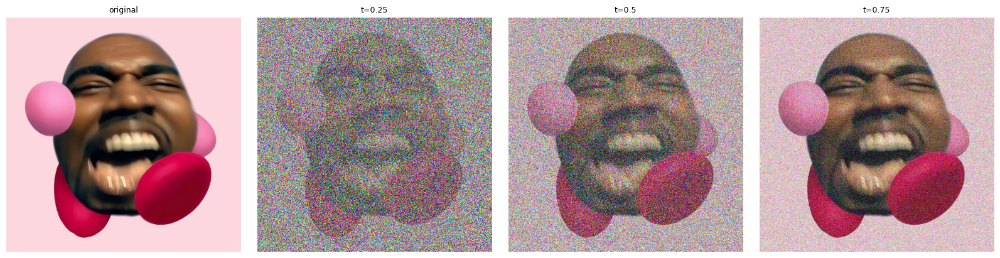

1.1 · constructing noisy training inputs
I reused one Gaussian noise tensor and interpolated it with the same clean image. As t increases, the clean-image contribution becomes stronger and the original structure becomes easier to recover.
xt = (1 − t)ε + tx1
